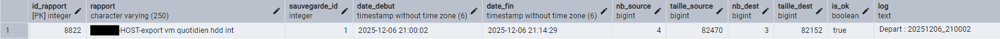
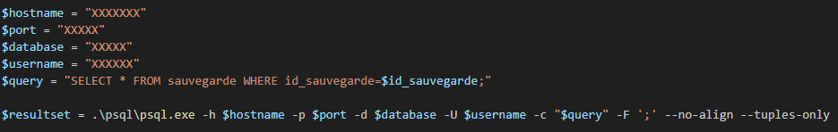
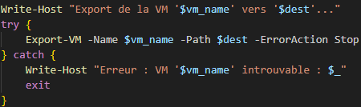
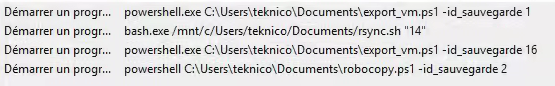
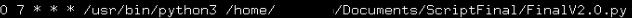
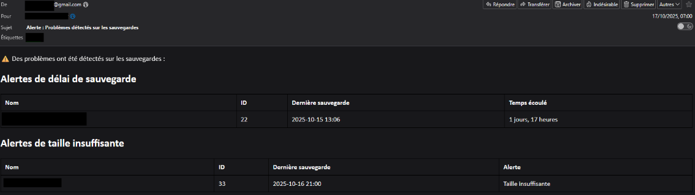
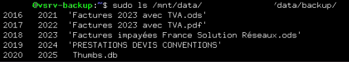

Illustrations - Sauvegardes automatisées
Exemples d'illustrations : Rapports enregistrés, connexion PostgreSQL, export Hyper-V, automatisation (Windows/Linux), alertes email et stockage Linux.
Les captures sont anonymisées (clients, identifiants) afin de respecter la confidentialité.
Rapports enregistrés dans PostgreSQL
Exemple d’un rapport : identifiant du rapport, nom de la sauvegarde volumes, identifiant de la sauvegarde, date de début et de fin, nombre et taille de fichiers à la cource et à l'arrivée, un status de la sauvegarde et son log associé.

Connexion psql (script Powershell)
Exemple de connexion postgreSQL utilisée pour interroger la base, récupérer les paramètres propres aux clients et envoyer les rapports présentés juste avant.

Export Hyper-V (PowerShell)
Exemple de script Powershell qui lance l'exportation de la machine virtuelle des clients en prenant en paramètres les identifiants données sur notre base de données.

Automatisation et planification des tâches
Lancement automatique des sauvegardes et verification réguliere de leur bon deroulement, sans intervention humaine.
- Windows : Planificateur de taches pour déclencher les scripts (exports Hyper-V, sauvegardes, robocopy).
- Linux : Crontab pour automatiser les scripts de verification et de reporting sur le poste de backup interne.


Email d’alerte (supervision)
Exemple d’email envoyé en cas d'anomalie, et liste les différentes erreurs (taille insuffisante, délais non respectés, pas assez de fichiers).

Stockage des données sur notre poste interne (Linux)
Exemple d’arborescence de données stockées sur notre poste dédié au stockage des données.
